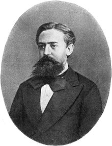

Markov Quote Generator
Instructions
It is recommended to generate around 20-25 quotes to maximize the chances of generating an amusing quote.
Executable File (Follow the onscreen instructions)Source Code
Additional Information
This program operates by making dictionaries that take a little over 400 humorous quotes and map the individual words to their previous word, and then the previous two words. For example, given the quotes 'My dog eats my homework' and 'She eats my sandwich', a dictionary entry for key 'eats', 'my' would look like dict['eats', 'my'] = 'homework', 'sandwich'. Duplicate entries are not only allowed, but encouraged. A Markov chain can generate predictions based on what previous data is received. If 'homework' showed up ten times in the quotes file after ['eats', 'my'], and 'sandwich' only showed up once, the generator would be far more likely to select 'homework' as the next word. The big limitation is choosing the first word, and this is done by picking randomly.